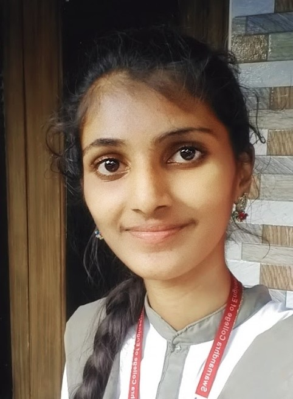

PRIYANKA K
SUCCESS IS
DO(Hardwork); IGNORE(Result); KEEP(Change)

About
I am a Final year student pursuing B.Tech., with specialization Computer Science and Engineering.
I have basic knowledge on JAVA, C, Python, Data Structures. The interest I have in web designing
me to learn HTML, CSS. Learning new things and knowing every thing are my good
personalities to do the work perfectly.
Quick Learning and adaptability are my strengths.
My Miscellany
Some of my Projects and Acheivements
PROJECTS - Community Serve Project which improved my team work skills
- Creating a Basic E-commerce website
INTERNSHIPS
TCS ion career edge young professional course from TCS
Online cloud foundations virtual internship
Online virtual Web development Internship from Digital Raise
Technical Skills
- HTML
- CSS
- Java Script
- Core Java
- Python
Soft Skills
Good Communication
Time Management
FOR CONTACT
📱 +91 9573783945
📧 Priyasharon716@gmail.com